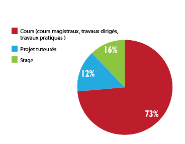
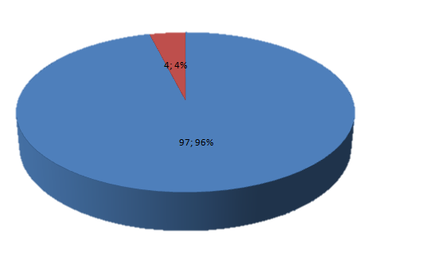

Objective of the training
Information Technology (about 900 hours)
This teaching concerns essentially the study of the material and software means and their implantation in organisation.
It is developed per three axes of 300 hours each, and is distributed on 4 units of corresponding teachings each in a half-year (TU 1.1, TU 2.1, TU 3.1, TU 4.1).
This 900 hours also contains the teachings of modules of deepening :
- Algorithmic and Programming: The bases of the programming and the algorithmic, programming Web.
- Architecture, systems and networks: Architecture of computers, networks, operating systems.
- Tools and models of the software engineering: Tools and methods of software engineering databases, workshop of software engineering, Merise.
- Deepening modules with choice.
The tutored projects have for objectives to teach to the student to work in team, to be autonomous, to look and synthesized by the information, to acquire a work experience and to develop knowledges
Comparaisons
Between BTS and faculty
- Realization in 2 years
- DUT comes true in a University and the BTS in public or private schools.
- IUT is more non-specialized and encourage the pupils for long studies.
- BTS addresses the young people stemming from vocational high school diplomas
Entre IUT et FAC :
- Everything courses are compulsory and every absence must be justified
- Students are more followed and have more than hours in a group what facilitates the learning
- Faculty works in partial while the IUT in continuous assessment
Subjects

Equipment
These teachings lean on the materials and the following software :
- 90 jobs under LINUX and Windows in networks with access to Internet.
- Languages ADA, DELPHI, C, JAVA, C++,SQL, ASSEMBLEUR... -SGBD MySQL,postgreSQL, AGL XDE, Eclipse
Schedule
Type of courses (CM/TP/TD)
CM : (Masterly courses around 110 pupils)
- Theoretical lessons
TD : (group around 25 pupils)
- Apply the lessons
- Practice
- Deepen the lessons seen in CM
TP : (Half group around 12 pupils)
- Ask questions
- More important help of the professors
Work Pace
Count from 35 to 40 hours a week, equalling the final year of high school, distributed between the school and tutored projects.
A lot of personal work is added to it, in the form of homework.
The rhythm supported enough by this sector requires constancy, rigor and organisation. The diligence in the school is compulsory. It conditions the passage from one year to the next and the obtaining of the final diploma.
Success in 2 years : 54.8%
Programme
Attract the women in the Information Technology
Make conferences in high schools for the fair sex of final year of high school in sciences degree to present the computing, and show that it is not exclusively reserved for the men.
Meetings with professionals during lounges dedicated the orientation for example, which can encourage their counterparts by exposing them concrete projects of the sector, and by consolidating them in the fact that there are no prejudices on them in the computing.
Lutter contre les stéréotypes
The spirit University Institute of Technology fights against enters him
Every Two-Year Technical Degree are in the same building dedicated to the University Institute of Technology. So, all the sectors meet and mix every day. It is a first option to fight against “enters him“
C’est une première option pour lutter contre « l’entre-soi »
There are projects tutored to make in a group of several students and so we can work with other different people with other passions to learn better to be self-aware.
For every sector, there are student associations which realise diverse evenings, of which the first one is the “evening of integration “which aims at discussing with the pupils and as her name indicates it : to become integrated.
Furthermore, there is a system of sponsoring which allows us to be sponsored by a student who is in the second year.
Stage
- Present only in 2nd year (half-year 4)
- The purpose being to have a first professional approach for pupils who almost never knew these circles and to be operational at the exit of their formation.
- Furthermore, he is going to allow the pupil to become known even to have a hiring commitment afterward
- Duration: 10 weeks of the beginning of April in in the middle of June
- Parculiarities : the typical internship consists of a development of application and preceded by a phase of analysis
- Evaluation: creation of a report and a defense in front of a jury of teachers and professionals
- Possibility of making its internship abroad (ex:RU, Hungary, etc.)